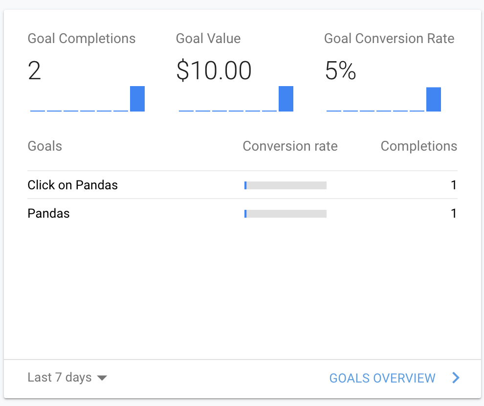
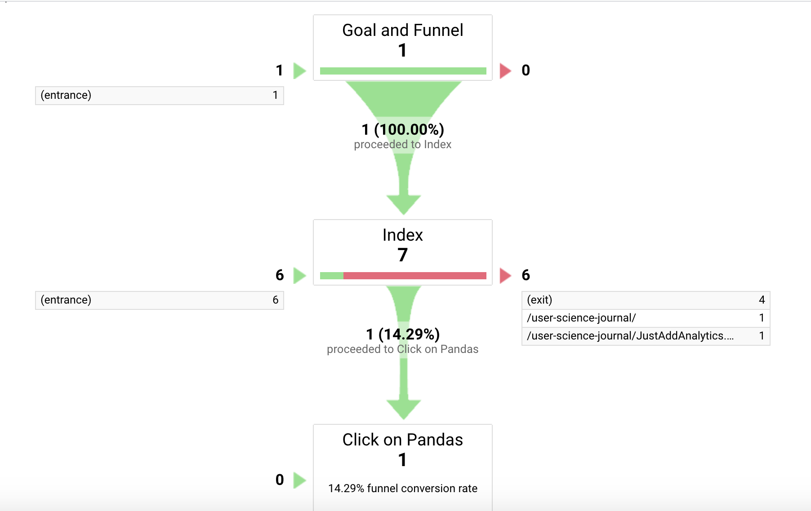

For this week’s assignment I created a Goal to track with a funnel using Google Analytics to measure how many users I could get to follow a specific link to a different page on my blog. This is referred to as a destination goal.
The Process:
To do this, I created a ‘Pandas’ blog post, and filled it with 3 totally adorable images of pandas. Because who really couldn’t use some panda pictures to brighten their day? After the page was created, I linked it to my blog homepage (here) in a caption box that says “Click here to see pictures of Pandas”.
Once the page was created and linked, I began setting up the Goal tracking in Google Analytics. I used a custom template, gave the Goal the name of “Click on Pandas”, chose “Destination” as the type and set it to the pandas page:
As you can see above, I also set a value to the goal (for fun) then added a funnel to the goal. Funnels track the steps a user must take in order to complete the goal action. For mine, I created a link within this post for users to click on, which would take them to my homepage where they could follow the pandas link.
The Results:
It took a bit of tinkering, but I knew everything was set up correctly because I was able to see tracking information show up in my Goal Conversion report from me clicking around on my phone and computer:
Please disregard the "Pandas" goal, I created it after having some difficulty getting the "Click on Pandas" goal working and have since turned off recording for it.
Through the Funnel Visualization report below, I was able to confirm that the path I chose to bring users to complete the goal was in fact working properly:
In Conclusion:
The Goals, Events and Funneling tools all seem very valuable for people and businesses to track how users are coming through their site, as well as at gauging how effective their website is at directing users to complete their goals such as completing a purchase, downloading a file, or signing up for a mailing list.